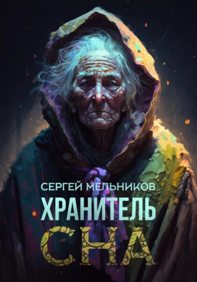

Увлекательное путешествие в разум и сердце

Хранитель сна
Городское фэнтези, мистика, ужасы, хоррор
Описание
Что стоит за просьбой ребёнка не гасить свет? Что скрывает платяной шкаф? И, главное, кто спасёт малыша от реальных монстров, которых, почему-то, не видят взрослые? Хранитель сна заступил на пост. Переживёт ли он первую ночь?
-
Объем:10 стр.
-
Возрастное ограничение:12+
-
Дата написания:2023 г.
-
видеовариант
-
аудиокнига